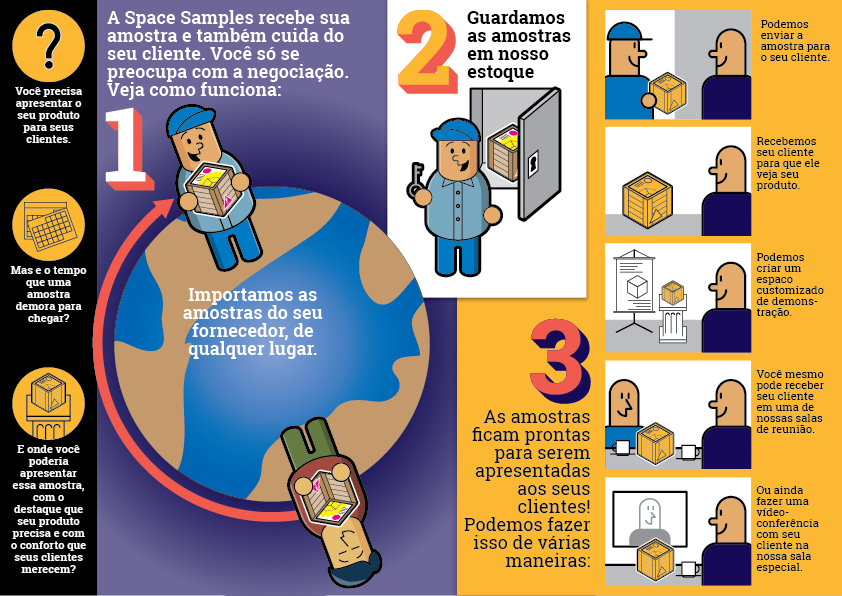
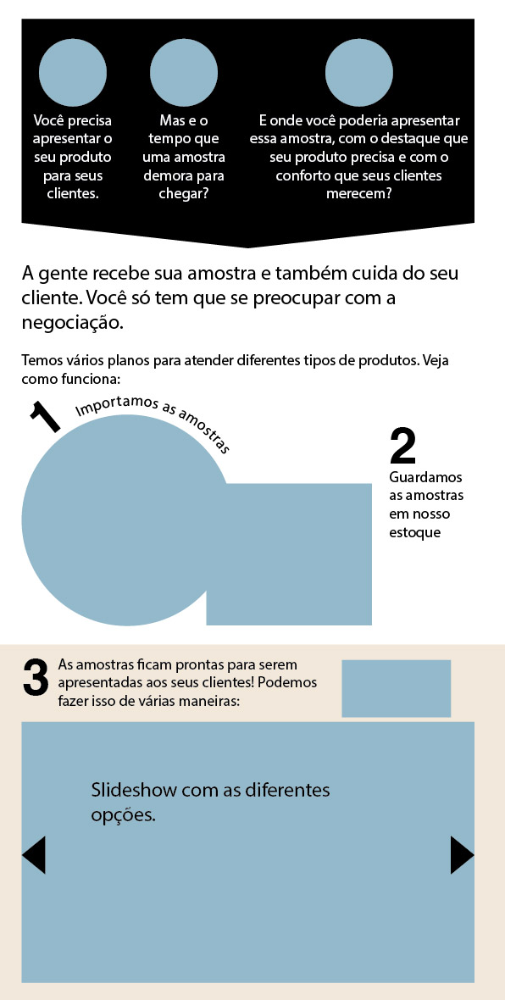
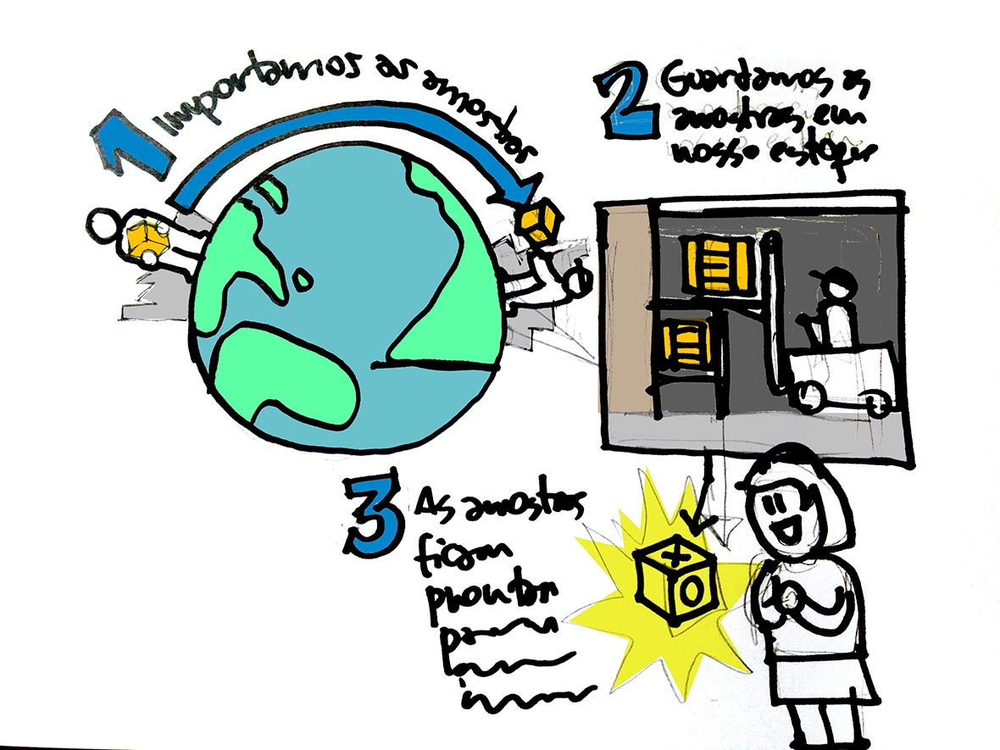
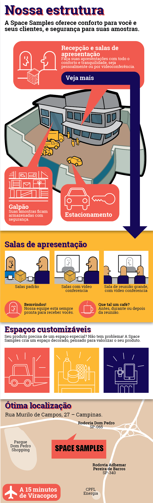

Space Samples
Space Samples é um serviço para quem importa produtos da China e quer contar com um showroom em localização estratégica a baixo custo. A ideia é boa, mas precisava ser bem explicada.

Foram algumas trocas de e-mails e de esboços até chegar na explicação final, que teve versões para cada meio que seria usada – email, mobile, impresso. Fiz a edição dos textos, infografias e ilustrações.

Primeiro trabalhei o texto, a partir do texto enviado pelo cliente. Depois, começaram os esboços para acertar a forma visual da explicação e o tom das ilustrações.

Também foram feitos infográficos mostrando a localização e recursos das instalações da empresa.
